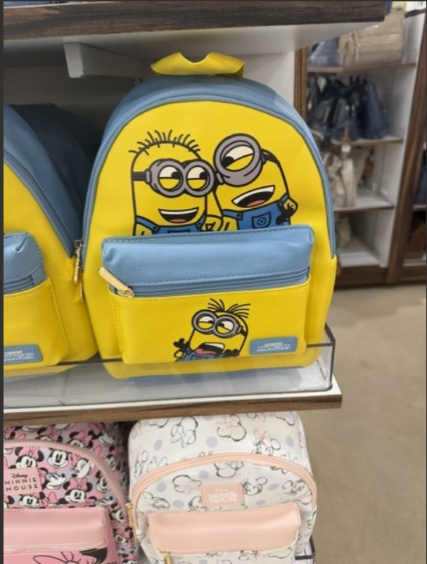

JPG Format Example

About This Image
I was taking a nice walk around JC Pennys, after being there bored due to my mom intense long boring shopping I was bored out of my mind so I took a while till I stumbled upon a eye catching bookbag. All I see is a yellow and light blue design bookbag with 3 little minions, known as Bob,Kevin, and Stuart the orginal 3. Fire bookbag might I say, it is perfect for little small road trips or for going to the mall if you don't want to carry a big purse ladies.
Why JPG Format?
JPG format works perfectly for this photograph because it contains thousands of colors with smooth gradients. As you can see this image was able to catch everything including background images and even the backgroud color. The file being so small was able to fit every movement down to the bookbags underneath the minions bookbags and includes all the colors in the images into the file. So therefore I recommended choosing JPG images.
Image source: Original photo by [Yours truly : Iliana Torres-Portillo]